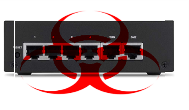

Routersploit:
 Pentoo / Gentoo Linux/
Pentoo / Gentoo Linux/  "Unoffical" Install
Guide
"Unoffical" Install
Guide
TO Do: make a Working Ebuild 9999 (live ebuild) to
automate the git-clone and install & Depends but for now
this is a work arround...
IE (includes Sabayon Linux , FUNTOO and other Gentoo
Variant's)
via
me.me
Pentoo Is a Live Cd based on Gentoo Linux for Pen-testing
www.Pentoo.ch
github.com/pentoo
https://wiki.gentoo.org/wiki/Pip
Warning
Running pip as root is not advised. It can render
important system tools like emerge useless.
That Being said .... now on to installing depends...
ADDING the Pentoo overlay
is Highly Recommended..
(as the Routersploit
team may add modules or plugins to use other tools ie
metasploit, bettercap, wifi-pumpkin etc.
, or have interrogations at any given time in the future..
that are in
Pentoo overlay )
if layman/git is
not installed
emerge -av app-portage/layman dev-vcs/git
layman -S &&
layman -a pentoo
Based on requirements text
files and lookups for Deps:
Overlay : https://gpo.zugaina.org/
--search overlays etc ...
Mainline:, https://packages.gentoo.org/
both can be use to find many python /other packages and map them to
Gentoo , Gentoo uses this to deal with packages of
similar ambiguous names same names but differing
use... as some common utils dev-go/some-cool-lib..
dev-python/cool-lib2 are ported over to go-lang ruby etc... or
have been named the same but are totally different..
#https://github.com/reverse-shell/routersploit/blob/master/requirements.txt
Dependencies Install:
 Sabayon Linux , using
entropy PM is offten best. , you may need ENMAN installed and
pen-testing (often built from Pentoo/Gentoo ) or other
binary overlays... and will save on build times...
Sabayon Linux , using
entropy PM is offten best. , you may need ENMAN installed and
pen-testing (often built from Pentoo/Gentoo ) or other
binary overlays... and will save on build times...
however some packages may not be avalible pre-built , you will have
to use emerge ... its wise to read... https://wiki.sabayon.org/index.php?title=HOWTO:_Safely_mix_Entropy_and_Portage
EQUO UP && EQUO i dev-python/beautifulsoup
dev-python/requests dev-python/pysnmp dev-python/pexpect
For:
Gentoo, Pentoo ,
Funtoo  , Calculate etc Chrome-OS
Core-OS , Zentoo , etc... (or Sabayon doing manual
package builds)
, Calculate etc Chrome-OS
Core-OS , Zentoo , etc... (or Sabayon doing manual
package builds)
Emerge -av package-name.... , --buildpkg to build
packages also , often a good idea if you run into trouble ..
as a backup. & or you can emerge binary-tarball-name.bz2 .... on
other systems..
emerge -av --buildpkg
dev-python/beautifulsoup dev-python/requests dev-python/pysnmp
dev-python/pexpect
(advanced users/control freaks..... USE sets use
flags with pyqt5 -pyqt5 (disable) )
python_targets=" " USE="+item
-unwanted-feature" emerge -av --buildpkg
dev-python/beautifulsoup dev-python/requests dev-python/pysnmp
dev-python/pexpect
(python_targets="python3_5" , 3_6 2_7 , pypy pypy3 ...
jython .... etc ) just note if other machines dont
have python-3.6.x pypy etc it will add more depends on
binary packages you share. ... likewise
pypy or -pypy )
Test Dependencies
install:
Routersploit TEST kit... optional...
###
https://github.com/reverse-shell/routersploit/blob/master/requirements-dev.txt
(yes theirs more in it this is the test bits... however rsf wont
run )
( Sabayon or sabayon varients...) EQUO UP &&
EQUO i .....
instead of emerge of packages.....
- emerge -av --buildpkg
virtual/python-mock dev-python/flake8
app-emulation/docker
Make will Spawn docker if the
daemon is running and you will need to install ...... more...
will fail if not...
at your option to run make , can so any new deps added
etc... ,
Manual Install:
- su -s
< for root term/xterm....>
- cd /usr/src
- git clone
https://github.com/reverse-shell/routersploit.git
- cd /usr/src/routersploit
- mkdir -p
/opt/routersploit
- cp /usr/src/routersploit/rsf.py
/opt/routersploit/rsf.py
- cp -r
/usr/src/routersploit/routersploit
/opt/routersploit
- ln -s
/opt/routersploit/rsf.py /usr/bin/rsf/
# Quick lazy alias...
---------- optional .. ## ICON i made
... quick and dirty... I also made a desktop skell to
launch RSF in XTERM form desktop if your lazy etc.. ,
however officaly ... artwork etc may not stay...
anyhow , should give a menu icon for your xfce etc.. or
desktop to abuse as often as needed...
- mkdir - p
/usr/share/icons/routerspliot/
- cp
/usr/src/routersploit/art/routersploit.png
/usr/share/icons/routerspliot/
- mkdir - p
/usr/share/applications/routerspliot/
- cp
/usr/src/routersploit/art/*.desktop
/usr/share/applications/routerspliot/
TO Do make a Working Ebuild 9999 (live ebuild) to automate
the git-clone and install & Depends but for now this is a work
arround...
IE
pentoo overlay , emerge
app-exploit/routersploit or simular is on list of
to-do's....